EXERCISE1
Chapter 10: Exercise 10.1
1. How many tangents can a circle have?
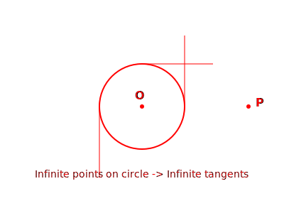
Answer: Infinitely many.
Explanation:
A circle is a collection of points.
A circle has infinitely many points on its circumference.
At any single point on the circle, we can draw exactly one tangent.
Since there are infinite points, there can be infinitely many tangents.
2. Fill in the blanks:
here]
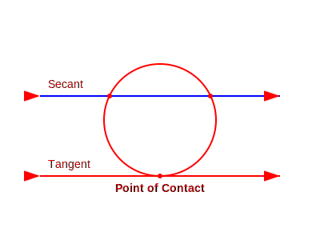
(i) A tangent to a circle intersects it in _____ point(s).
Answer: One
(ii) A line intersecting a circle in two points is called a _____.
Answer: Secant
(iii) A circle can have _____ parallel tangents at the most.
Answer: Two (Usually at the ends of a diameter)
(iv) The common point of a tangent to a circle and the circle is called _____.
Answer: Point of contact
3. A tangent PQ at a point P of a circle of radius 5 cm meets a line through the centre O
at a point Q so that OQ = 12 cm. Length PQ is:
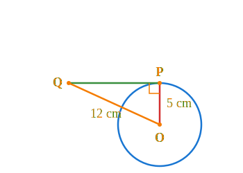
Given: Radius OP = 5 cm. Distance OQ = 12 cm. PQ is a
tangent at P.
To Find: Length PQ.
Solution:
We know that the radius is perpendicular to the tangent at the point of contact (Theorem 10.1).
So, \(\angle OPQ = 90^\circ\).
Therefore, \(\triangle OPQ\) is a right-angled triangle.
By Pythagoras Theorem: \(Hypotenuse^2 = Base^2 + Height^2\).
\(OQ^2 = OP^2 + PQ^2\).
Substitute the values: \(12^2 = 5^2 + PQ^2\).
\(144 = 25 + PQ^2\).
\(PQ^2 = 144 - 25\).
\(PQ^2 = 119\).
\(PQ = \sqrt{119}\) cm.
Final Conclusion: Hence, the length PQ is
\(\sqrt{119}\) cm.
4. Draw a circle and two lines parallel to a given line such that one is a tangent and the
other, a secant to the circle.
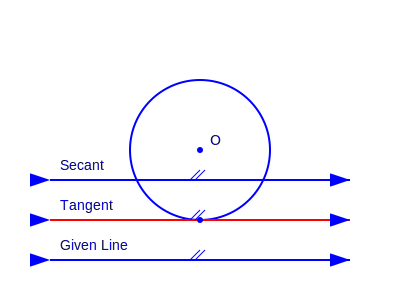
To Do: Draw a circle and lines parallel to a given
line (one tangent, one secant).
Steps of Construction:
Draw a circle with center O.
Draw a straight line \(AB\) (this is the given line).
Draw a perpendicular to line \(AB\) passing through the center O.
Mark two points on this perpendicular line.
One point P on the circle, and another point S inside the circle.
Draw a line through P perpendicular to the radius (This is line \(n\)).
Draw a line through S perpendicular to the radius line (This is line \(m\)).
Here, line \(n\) touches the circle at one point, so it is a Tangent.
Line \(m\) cuts the circle at two points, so it is a Secant.
Both lines \(m\) and \(n\) are parallel to the given line \(AB\).
Final Conclusion: See the construction in the
diagram.
EXERCISE2
Chapter 10: Exercise 10.2
1. From a point Q, the length of the tangent to a circle is 24 cm and the distance of Q
from the centre is 25 cm. The radius of the circle is:

Given: Radius OP. Distance OQ = 25 cm. Tangent PQ =
24 cm.
To Find: Radius of the circle (OP).
Solution:
We know that radius is perpendicular to tangent at the point of contact (Theorem 10.1).
Therefore, \(\angle OPQ = 90^\circ\).
In right-angled \(\triangle OPQ\): By Pythagoras Theorem:
\(Hypotenuse^2 = Base^2 + Altitude^2\).
\(OQ^2 = OP^2 + PQ^2\).
\(25^2 = OP^2 + 24^2\).
\(625 = OP^2 + 576\).
\(OP^2 = 625 - 576\).
\(OP^2 = 49\).
\(OP = \sqrt{49} = 7\) cm.
Final Conclusion: Hence, the radius of the circle is
7 cm.
2. In Fig., if TP and TQ are the two tangents to a circle with centre O so that ∠POQ =
110°, then ∠PTQ is equal to:
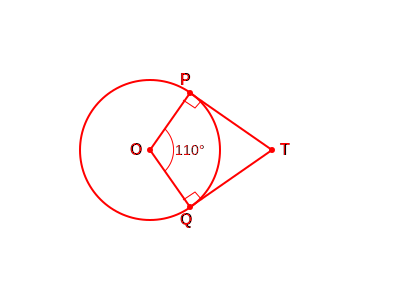
Given: Two tangents TP and TQ. Angle at center
\(\angle POQ = 110^\circ\).
To Find: Angle \(\angle PTQ\).
Solution:
We know that radius is perpendicular to tangent (Theorem
10.1).
Therefore, \(\angle OPT = 90^\circ\) and \(\angle OQT = 90^\circ\).
POQT is a quadrilateral. Sum of angles in a quadrilateral is \(360^\circ\).
\(\angle POQ + \angle OPT + \angle OQT + \angle PTQ = 360^\circ\).
Substitute the values: \(110^\circ + 90^\circ + 90^\circ + \angle PTQ = 360^\circ\).
\(290^\circ + \angle PTQ = 360^\circ\).
\(\angle PTQ = 360^\circ - 290^\circ\).
\(\angle PTQ = 70^\circ\).
Final Conclusion: Hence, \(\angle PTQ\) is equal to
\(70^\circ\).
3. If tangents PA and PB from a point P to a circle with centre O are inclined to each
other at angle of 80°, then ∠POA is equal to:
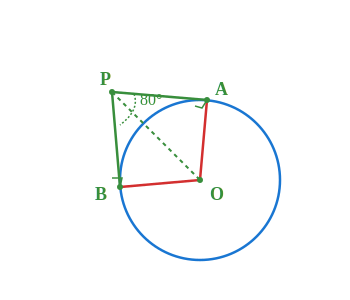
Given: Tangents PA and PB are inclined at
\(80^\circ\) (i.e., \(\angle APB = 80^\circ\)).
To Find: Angle \(\angle POA\).
Solution:
We know that the line joining the center and external point bisects the angle between
tangents.
Therefore, \(\angle APO = \frac{1}{2} \angle APB\).
\(\angle APO = \frac{80^\circ}{2} = 40^\circ\).
Also, radius OA \(\perp\) tangent PA at A (Theorem
10.1).
So, \(\angle OAP = 90^\circ\).
In \(\triangle OAP\), sum of angles is \(180^\circ\).
\(\angle POA + \angle OAP + \angle APO = 180^\circ\).
\(\angle POA + 90^\circ + 40^\circ = 180^\circ\).
\(\angle POA + 130^\circ = 180^\circ\).
\(\angle POA = 180^\circ - 130^\circ = 50^\circ\).
Final Conclusion: Hence, \(\angle POA\) is equal to
\(50^\circ\).
4. Prove that the tangents drawn at the ends of a diameter of a circle are parallel.
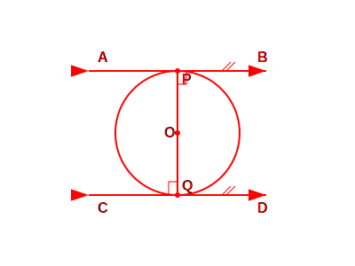
Given: A circle with center O. PQ is a diameter. AB
and CD are tangents at P and Q respectively.
To Prove: Tangent AB is parallel to Tangent CD (AB ||
CD).
Proof:
OP is the radius and AB is the tangent at P.
By Theorem 10.1: Radius \(\perp\) Tangent.
Therefore, \(\angle OPB = 90^\circ\) (or \(\angle APQ = 90^\circ\)).
OQ is the radius and CD is the tangent at Q.
By Theorem 10.1: Radius \(\perp\) Tangent.
Therefore, \(\angle OQC = 90^\circ\) (or \(\angle DQP = 90^\circ\)).
Consider transversal PQ intersecting lines AB and CD.
From the above, \(\angle OPB = 90^\circ\) and \(\angle OQC = 90^\circ\).
Their sum \(\angle OPB + \angle OQC = 180^\circ\) (Consecutive Interior Angles).
Also alternate interior angles \(\angle APQ\) and \(\angle DQP\) are both \(90^\circ\).
Since alternate interior angles are equal, the lines are parallel.
Therefore, AB || CD.
Final Conclusion: Hence, the tangents drawn at the
ends of a diameter are parallel.
5. Prove that the perpendicular at the point of contact to the tangent to a circle passes
through the centre.
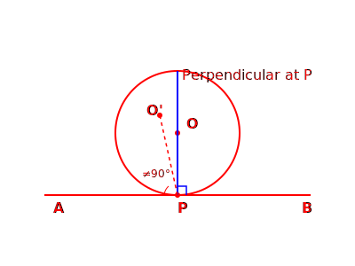
Given: A circle with center O. Tangent AB touches at
point P.
To Prove: Perpendicular to AB at P passes through
center O.
Proof:
Let us assume the perpendicular to AB at point P does not pass through center
O.
Let it pass through another point O'.
Then, \(\angle O'PB = 90^\circ\) (by our assumption).
However, we know by Theorem 10.1 that the radius is
perpendicular to the tangent.
So, OP \(\perp\) AB \(\Rightarrow \angle OPB = 90^\circ\).
Comparing the two angles: \(\angle O'PB = \angle OPB = 90^\circ\).
This is only possible if the line segment O'P and OP coincide.
Therefore, O' must coincide with O.
Thus, the perpendicular at the point of contact must pass through the center.
Final Conclusion: Hence Proved.
6. The length of a tangent from a point A at distance 5 cm from the centre of the circle
is 4 cm. Find the radius of the circle.

Given: Distance OA = 5 cm. Length of tangent AP = 4
cm.
To Find: Radius of the circle (OP).
Solution:
Since AP is a tangent and OP is a radius, they are perpendicular (Theorem 10.1).
So, \(\triangle OPA\) is a right-angled triangle.
By Pythagoras Theorem: \(OA^2 = OP^2 + AP^2\).
Substitute values: \(5^2 = OP^2 + 4^2\).
\(25 = OP^2 + 16\).
\(OP^2 = 25 - 16\).
\(OP^2 = 9\).
\(OP = 3\) cm.
Final Conclusion: Hence, the radius of the circle is
3 cm.
7. Two concentric circles are of radii 5 cm and 3 cm. Find the length of the chord of the
larger circle which touches the smaller circle.
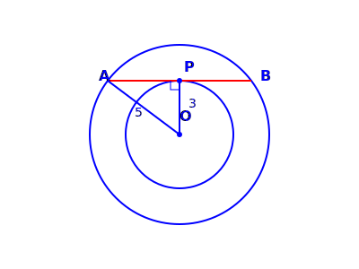
Given: Two concentric circles with center O. Radii 5
cm and 3 cm. Chord AB of larger circle touches smaller circle.
To Find: Length of chord AB.
Solution:
Let chord AB touch the smaller circle at point P.
OP is the radius of the smaller circle (= 3 cm).
AB is a tangent to the smaller circle at P.
So, OP \(\perp\) AB (by Theorem 10.1).
Since AB is a chord of the larger circle and OP \(\perp\) AB:
P bisects AB (Perpendicular from center to chord bisects it).
So, \(AP = PB\).
In right-angled \(\triangle OPA\) (Hypotenuse OA = 5 cm):
\(OA^2 = OP^2 + AP^2\).
\(5^2 = 3^2 + AP^2\).
\(25 = 9 + AP^2\).
\(AP^2 = 16 \Rightarrow AP = 4\) cm.
Length of chord \(AB = 2 \times AP = 2 \times 4 = 8\) cm.
Final Conclusion: Hence, the length of the chord is 8
cm.
8. A quadrilateral ABCD is drawn to circumscribe a circle. Prove that AB + CD = AD + BC.
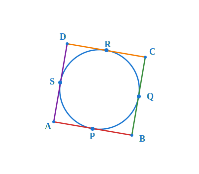
Given: A quadrilateral ABCD circumscribing a circle.
Points of contact P, Q, R, S on sides AB, BC, CD, DA respectively.
To Prove: \(AB + CD = AD + BC\).
Proof:
We know tangent lengths from an external point are equal (Theorem 10.2).
Tangents from A: \(AP = AS\) ... (i)
Tangents from B: \(BP = BQ\) ... (ii)
Tangents from C: \(CR = CQ\) ... (iii)
Tangents from D: \(DR = DS\) ... (iv)
Add equations (i), (ii), (iii), and (iv):
\((AP + BP) + (CR + DR) = (AS + DS) + (BQ + CQ)\).
From the figure: \(AP + BP = AB\) and \(CR + DR = CD\).
Also: \(AS + DS = AD\) and \(BQ + CQ = BC\).
Substituting these values: \(AB + CD = AD + BC\).
Final Conclusion: Hence Proved.
9. In Fig., XY and X'Y' are two parallel tangents... Prove that ∠AOB = 90°.
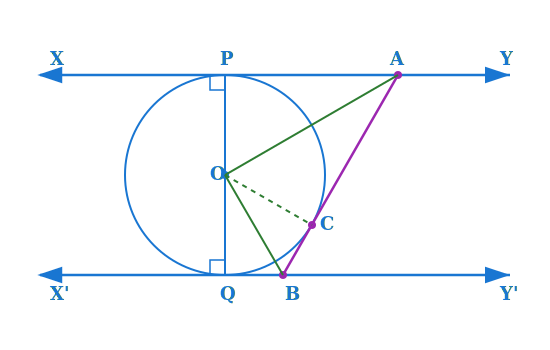
Given: Parallel tangents XY and X'Y'. Tangent AB
intersecting XY at A and X'Y' at B.
To Prove: \(\angle AOB = 90^\circ\).
Construction: Join OC.
Proof:
In \(\triangle OPA\) and \(\triangle OCA\):
\(OP = OC\) (Radii of same circle).
\(AP = AC\) (Tangents from external point A).
\(OA = OA\) (Common side).
By SSS Congruence Rule: \(\triangle OPA \cong \triangle OCA\).
Therefore, \(\angle POA = \angle COA\). Let them be \(x\).
Similarly, \(\triangle OQB \cong \triangle OCB\).
Therefore, \(\angle QOB = \angle COB\). Let them be \(y\).
Since XY || X'Y', POQ is a diameter (straight line).
Sum of angles on a straight line is \(180^\circ\).
\(\angle POA + \angle COA + \angle COB + \angle QOB = 180^\circ\).
\(x + x + y + y = 180^\circ\).
\(2(x + y) = 180^\circ \Rightarrow x + y = 90^\circ\).
From figure, \(\angle AOB = \angle COA + \angle COB = x + y\).
Therefore, \(\angle AOB = 90^\circ\).
Final Conclusion: Hence Proved.
10. Prove that the angle between the two tangents drawn from an external point to a circle
is supplementary to the angle subtended by the line-segment joining the points of contact at the centre.
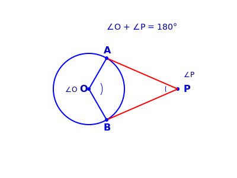
Given: External point P. Tangents PA and PB.
To Prove: Angle between tangents (\(\angle APB\)) +
Angle at center (\(\angle AOB\)) = \(180^\circ\).
Proof:
We know radius is perpendicular to tangent at point of contact (Theorem 10.1).
So, \(\angle OAP = 90^\circ\) and \(\angle OBP = 90^\circ\).
Consider quadrilateral OAPB.
Sum of all interior angles of a quadrilateral is \(360^\circ\).
\(\angle APB + \angle AOB + \angle OAP + \angle OBP = 360^\circ\).
Substitute the values: \(\angle APB + \angle AOB + 90^\circ + 90^\circ = 360^\circ\).
\(\angle APB + \angle AOB + 180^\circ = 360^\circ\).
\(\angle APB + \angle AOB = 360^\circ - 180^\circ = 180^\circ\).
Since sum is \(180^\circ\), the angles are supplementary.
Final Conclusion: Hence Proved.
11. Prove that the parallelogram circumscribing a circle is a rhombus.
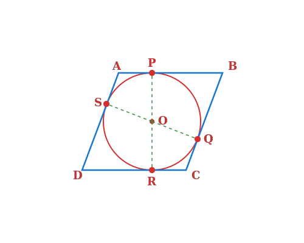
Given: Parallelogram ABCD circumscribing a circle.
To Prove: ABCD is a rhombus.
Proof:
Since ABCD is a parallelogram, opposite sides are equal.
\(AB = CD\) and \(AD = BC\) ... (Equation 1).
We know that for any quadrilateral circumscribing a circle (from Q8):
\(AB + CD = AD + BC\).
Substitute values from Equation 1:
\(AB + AB = AD + AD\).
\(2AB = 2AD\).
\(AB = AD\).
Since adjacent sides AB and AD are equal, all sides of the parallelogram are equal.
A parallelogram with equal sides is a rhombus.
Final Conclusion: Hence, ABCD is a rhombus.
12. A triangle ABC is drawn to circumscribe a circle of radius 4 cm... Find the sides AB
and AC.

Given: \(\triangle ABC\) circumscribing a circle.
Radius \(r = 4\) cm. \(BD = 8\) cm, \(CD = 6\) cm.
To Find: Lengths of sides AB and AC.
Solution:
Let tangent points be D, E, F on sides BC, AC, AB.
We have \(BD = 8\) cm and \(CD = 6\) cm.
Tangents from external point are equal (Theorem
10.2).
\(BF = BD = 8\) cm and \(CE = CD = 6\) cm.
Let \(AF = AE = x\) cm.
Sides of triangle: \(a = 14\), \(b = x+6\), \(c = x+8\).
Semiperimeter \(s = \frac{14 + x+6 + x+8}{2} = x + 14\).
Area of \(\triangle ABC = \sqrt{s(s-a)(s-b)(s-c)}\) (Heron's Formula).
Area \(= \sqrt{(x+14)(x)(8)(6)} = \sqrt{48x(x+14)}\).
Also, Area \(= \frac{1}{2}r(Perimeter) = \frac{1}{2}(4)(2x+28) = 2(2x+28) = 4(x+14)\).
Equating both areas: \(\sqrt{48x(x+14)} = 4(x+14)\).
Squaring both sides: \(48x(x+14) = 16(x+14)^2\).
Divide by \(16(x+14)\): \(3x = x + 14\).
\(2x = 14 \Rightarrow x = 7\).
Side \(AB = x + 8 = 7 + 8 = 15\) cm.
Side \(AC = x + 6 = 7 + 6 = 13\) cm.
Final Conclusion: Hence, AB = 15 cm and AC = 13 cm.
13. Prove that opposite sides of a quadrilateral circumscribing a circle subtend
supplementary angles at the centre of the circle.
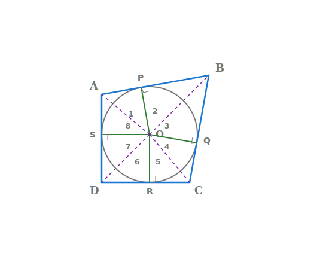
Given: Quadrilateral ABCD circumscribing a circle
with center O.
To Prove: Opposite sides subtend supplementary angles
at center (\(\angle AOB + \angle COD = 180^\circ\)).
Construction: Join the center O to points of contact
P, Q, R, S.
Proof:
Consider \(\triangle AOP\) and \(\triangle AOS\).
\(AP = AS\) (Tangents from A).
\(OP = OS\) (Radii).
\(OA = OA\) (Common).
By SSS Congruence Rule: \(\triangle AOP \cong \triangle AOS\).
Therefore, \(\angle 1 = \angle 8\) (By CPCT).
Similarly, \(\angle 2 = \angle 3\), \(\angle 4 = \angle 5\), \(\angle 6 = \angle 7\).
Sum of all angles at center O is \(360^\circ\).
\(\angle 1 + \angle 2 + \angle 3 + \angle 4 +5 + \angle 6 + \angle 7 + \angle 8 = 360^\circ\).
Grouping equal angles: \(2(\angle 1 + \angle 2) + 2(\angle 5 + \angle 6) = 360^\circ\).
\(\angle 1 + \angle 2 + \angle 5 + \angle 6 = 180^\circ\).
From figure, \(\angle AOB = \angle 1 + \angle 2\) and \(\angle COD = \angle 5 + \angle 6\).
Therefore, \(\angle AOB + \angle COD = 180^\circ\).
Final Conclusion: Hence, opposite sides subtend
supplementary angles at the center.
EXAMPLES
Chapter 10: Solved Examples
Example 1. Prove that in two concentric circles, the chord of the larger circle, which
touches the smaller circle, is bisected at the point of contact.
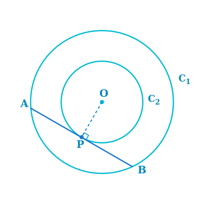
Given: Two concentric circles \(C_1\) (larger) and
\(C_2\) (smaller) with center O. Chord AB of circle \(C_1\) touches circle \(C_2\) at point P.
To Prove: The chord AB is bisected at the point of
contact P (i.e., AP = PB).
Construction: Join OP.
Proof:
AB is a tangent to the smaller circle \(C_2\) at point P and OP is the radius.
According to Theorem 10.1 (Radius is perpendicular to
tangent):
OP \(\perp\) AB.
Now, consider the larger circle \(C_1\).
AB is a chord of circle \(C_1\) and OP \(\perp\) AB.
We know that the perpendicular drawn from the center to a chord bisects the chord.
Therefore, AP = PB.
Final Conclusion: Hence, the chord is bisected at the
point of contact.
Example 2. Two tangents TP and TQ are drawn to a circle with centre O from an external
point T. Prove that ∠PTQ = 2 ∠OPQ.
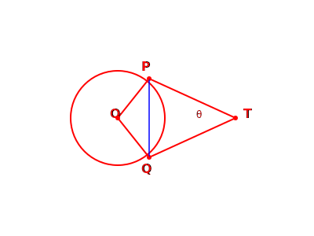
Given: A circle with center O. An external point T.
Two tangents TP and TQ.
To Prove: \(\angle PTQ = 2 \angle OPQ\).
Proof:
Let \(\angle PTQ = \theta\).
TP and TQ are tangents drawn from an external point T.
According to Theorem 10.2 (Lengths of tangents from
external point are equal):
\(TP = TQ\).
So, \(\triangle TPQ\) is an isosceles triangle.
Therefore, \(\angle TPQ = \angle TQP\).
Sum of angles in a triangle is \(180^\circ\). So, \(\angle TPQ + \angle TQP + \angle PTQ =
180^\circ\).
\(2\angle TPQ + \theta = 180^\circ \Rightarrow 2\angle TPQ = 180^\circ - \theta\).
\(\angle TPQ = \frac{1}{2}(180^\circ - \theta) = 90^\circ - \frac{\theta}{2}\).
Also, according to Theorem 10.1 (Radius is perpendicular
to tangent):
\(\angle OPT = 90^\circ\).
Now, \(\angle OPQ = \angle OPT - \angle TPQ\).
\(\angle OPQ = 90^\circ - (90^\circ - \frac{\theta}{2})\).
\(\angle OPQ = \frac{\theta}{2}\).
\(\theta = 2 \angle OPQ \Rightarrow \angle PTQ = 2 \angle OPQ\).
Final Conclusion: Hence Proved.
Example 3. PQ is a chord of length 8 cm of a circle of radius 5 cm. The tangents at P and
Q intersect at a point T. Find the length TP.
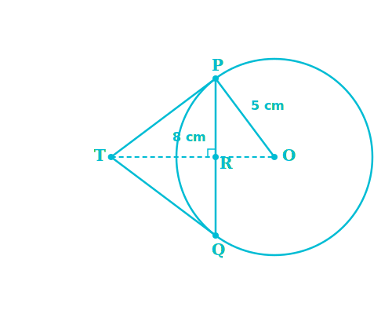
Given: Chord PQ = 8 cm. Radius OP = 5 cm. Tangents at
P and Q intersect at T.
To Find: Length of tangent TP.
Construction: Join OT (intersecting PQ at R).
Solution:
\(\triangle TPQ\) is an isosceles triangle (Since TP = TQ).
OT is the angle bisector of \(\angle PTQ\).
Therefore, OT is perpendicular bisector of chord PQ. So, \(OT \perp PQ\).
So, PR = RQ = \(\frac{8}{2} = 4\) cm.
In right-angled \(\triangle ORP\) (By Pythagoras Theorem):
\(OR = \sqrt{OP^2 - PR^2} = \sqrt{5^2 - 4^2} = \sqrt{25 - 16} = \sqrt{9} = 3\) cm.
Let length TP = \(x\) and length TR = \(y\).
In right-angled \(\triangle PRT\): \(TP^2 = TR^2 + PR^2\).
\(x^2 = y^2 + 4^2 \Rightarrow x^2 = y^2 + 16\) ... (Equation 1)
In right-angled \(\triangle OPT\) (Angle P is \(90^\circ\) by Theorem 10.1):
\(OT^2 = TP^2 + OP^2\) (Hypotenuse is OT).
\((y + 3)^2 = x^2 + 5^2\).
\(y^2 + 6y + 9 = x^2 + 25\).
Substitute value of \(x^2\) from Equation 1:
\(y^2 + 6y + 9 = (y^2 + 16) + 25\).
\(y^2 + 6y + 9 = y^2 + 41\).
\(6y = 41 - 9 \Rightarrow 6y = 32 \Rightarrow y = \frac{32}{6} = \frac{16}{3}\) cm.
Now substitute \(y\) in Equation 1:
\(x^2 = (\frac{16}{3})^2 + 16 = \frac{256}{9} + 16\).
\(x^2 = \frac{256 + 144}{9} = \frac{400}{9}\).
\(x = \sqrt{\frac{400}{9}} = \frac{20}{3}\) cm.
Final Conclusion: Hence, the length TP is
\(\frac{20}{3}\) cm.